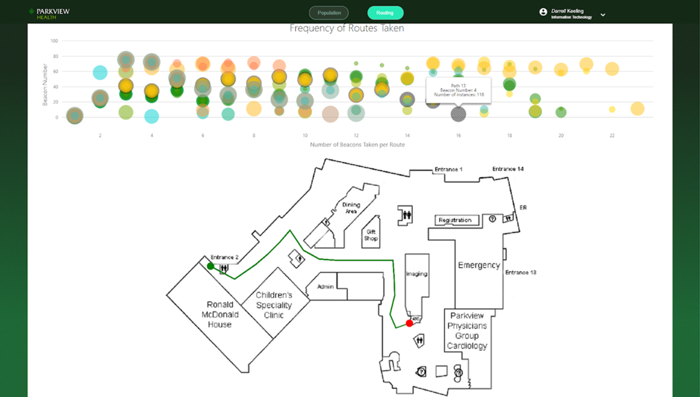

Improved accessibility for people with disabilities
This web application analyzes and presents collected data in a heatmap and a chart of frequent routes to read routing patterns and optimize
space utilization for people with disabilities.
During my senior year, I worked on a funded project sponsored by
Parkview Health System, Inc. for indoor navigation and visual analytics.
This project awarded to the Purdue FW CS Dept. Senior Capstone
Design Award 2019 for the second prize.
Source Code
Methods
Mobile Wayfinding system
Data Analytics & Data Visualization
Team
2 Web Front-end develpers (Nicholas, Haemin), 2 Web Back-end developers (Zarni, Min), and 1 mobile app developer (Micheal)
My Responsiblities
Front-end Development Lead
UX/UI Design
Data Analytics
Remote Beacon Control
How might we use the user information and collected navigation data
by the beacons in the hospital to help guide patients with disabilities?
Background
The primary purpose of this project is to improve upon the previous generation of the Indoor
Navigation Mobile Application that was created for the Parkview Regional Medical Campus (PRMC) in Fort Wayne,
Indiana. Parkview hospital could understand routing patterns with the framework and optimize space utilization for people
with disabilities.
PRMC is investing in improving the patient experience and is a leading institution in the
medical industry. The project
aims to leverage new technologies which focused on the patient experience to keep PRMC ahead of
the competitors.
The application uses Bluetooth low energy to power the real-time application positioning
functionality, creating an easy-to-understand navigation system.
Problem Statement
- Information (The user data and navigation data in the hospital) in the database currently is not used.
- How can we help guide patients efficiently?
Solution
The web application provides analyzed data to administrative staff in a comprehensive manner, and allows the data to be manipulated or
viewed in a variety of formats.
For example, Parkview employees can use a web application to determine the most populated time and by which age group or
gender. This effect would allow for an in-depth look at particular patient demographics, giving Parkview Health the
tools to improve its services.
My Role
- Created a web application that analyzes and presents created data in a heatmap and a chart of frequent routes for Parkview Hospital's Utilization.
- Managed the product design process from sketch to actual production build with considering user experiences.
- Built a web controller interface (top part on the chart pages) that visualizes interactive data analytics using Angular 7, TypeScript, and HTML/CSS/JavaScript.
- Designed and developed the user interface of Parkview Health employee administration pages
: Management systems for the secure data analytics tool including user sign in (Login) page, sign up (Registration) page, sign out page, and update information (Settings), and Forgot password page.
- Drew the indoor map of the Parkview hospital to present the heatmap data using the layer of the heapmap.js implementation on the indoor Parkview campus map.
Tech Stack
UI Design and Prototyping - InVision, Sketch, Proto.io
Front-end Development - Angular 7 (7.0.6), TypeScript, HTML, CSS, JavaScript
Back-end Development - NodeJS, express (MEAN stack)
Database Management - MySQL
Data Visualization - Heatmap.js
Mobile App Development - Android, Java
Beacon Control - Maridian, Aruba beacons
Registration
Sign up & Sign in
The diamond shape of the central login window is designed in consideration of the shape of the Parkview Hospital logo.
Since the main page should guide users to log in first as necessary, I put the input items in the center of the page. To keep the main theme color of Parkview Health, the main color of the application pages uses green and the "LOGIN" button is highlighted so that the user can identify and click easily.
The white color on the button highlighted the text that makes the user goes to different pages. The Parkview staff account-related pages are essential to manage/keep the security of the patients' data.
Main login Page
Registration Page Page
Population
Heatmap.js
A heat map page allows the staff to view the population of the spot and check the most popular department, most popular beacon number, and least popular beacon number.
I added the sun and moon icons at the bottom of the time picker to let you know at a glance whether it is daytime or nighttime when setting the time range on the heatmap controller.
In addition, the color of the time picker bar is designed as a gradient green color in consideration of the sun rising and setting. The time of day when the sun goes down is expressed in dark green, and the time of day when the sun rises is expressed in lighter green.
All setting texts and result boxes that have meaning are displayed together with text and icon so that the user can easily understand the meaning with just the icon.
Routing
Routing map
This is a routing map page for understanding routing patterns on the first floor of the hospital.
Each series of bubbles on the route chart represent a route taken. The size of the bubble on the chart represents the frequency of the route. When clicking on a bubble, it draws the corresponding route on the map.

Project Aspirations
This iteration of the project focused on three key features web development, targeted advertisements, and improved
mobile application navigation.
This web development with utilizing data improved mobile application navigation to assisted disabled
patients.
Each feature serves to enhance PRMC's quality of service.